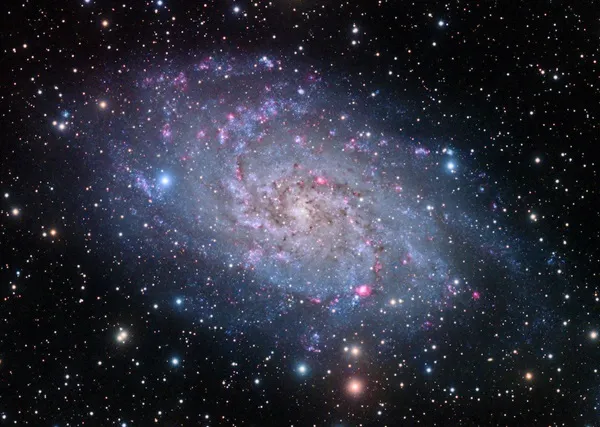

Notable Galaxies in Our Universe
Milky Way
The Milky Way is the galaxy that contains our solar system. It's a barred spiral galaxy, with an estimated 100-400 billion stars. The Milky Way's central core contains a supermassive black hole.

Andromeda Galaxy
The Andromeda Galaxy, also known as M31, is the nearest spiral galaxy to the Milky Way. It's on a collision course with our galaxy, and they are expected to merge in about 4 billion years.

Triangulum Galaxy
The Triangulum Galaxy, also known as M33, is a member of the Local Group of galaxies, which also includes the Milky Way and Andromeda. It's the third-largest galaxy in the Local Group.
